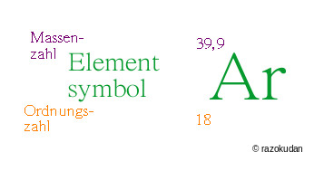

Elementsymbole
Elemente sind im Periodensystem nach Anzahl der e- (Elektronen)/p+ (Protonen) und damit auch nach Schalenanzahl sortiert.
Nimmt man sich ein Periodensystem zur Hand, dann sind da zusätzlich zu den Elementabkürzungen, H He Li Be…, noch Zahlen:
Die untere, oder fortlaufende natürliche Zahl, 1 2 3…, ist die Ordnungszahl. Die Anzahl der e-/p+ (gleiche Anzahl, sonst wäre das Atom elektrisch geladen!), nach denen ist das Periodensystem ja geordnet.
Die obere, oft Dezimalzahl, "Kommazahl", (siehe Isotope), ist die Massenzahl. Die Menge an p+ und n0, pro Stück je ~1u (siehe Atomaufbau). Zusammen machen sie also die Masse des Atoms aus, die e- wiegen ja "nichts".
